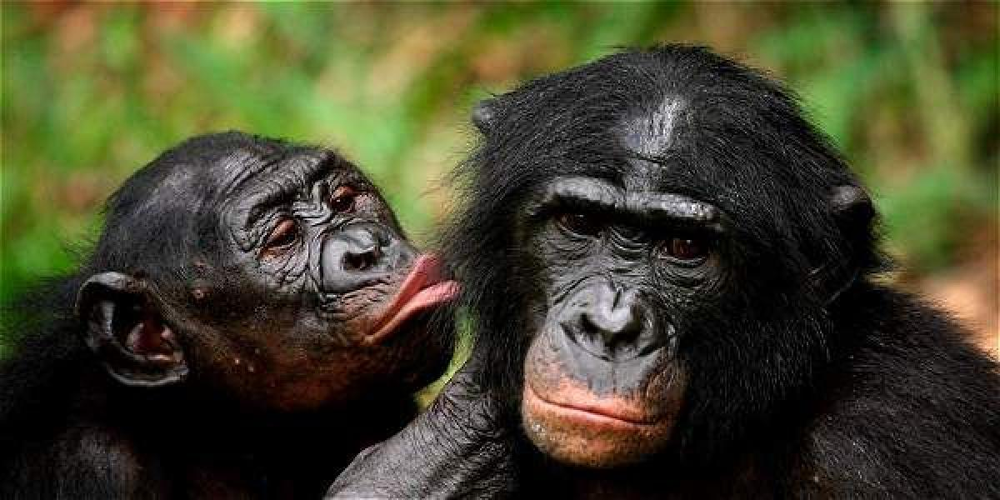

¿Qué son los bonobos?
Los bonobos son una especie de primates que viven en los bosques de la República Democrática del Congo. Son conocidos por su comportamiento pacífico y sus complejas interacciones sociales.
Características
Los bonobos tienen una apariencia similar a los chimpancés, pero con cuerpos más delgados y rostros más oscuros. Son animales muy sociales y se comunican a través de vocalizaciones, gestos y contacto físico.
Hábitat
Los bonobos habitan en los bosques lluviosos de la cuenca del Congo, donde encuentran su alimento y refugio.